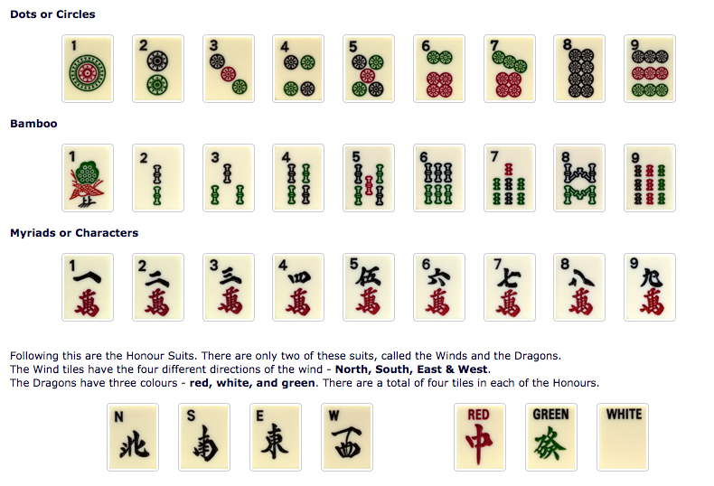
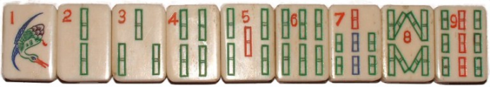
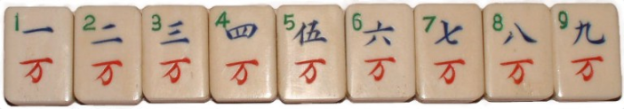
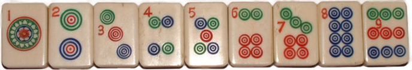
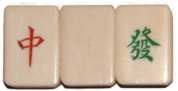
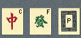
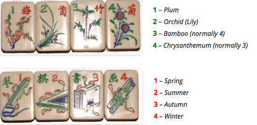
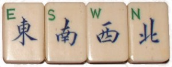
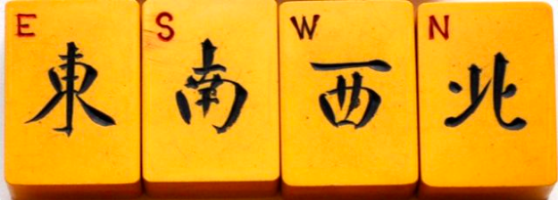

There are 144 tiles in all, composed of five suits:
bamboos (1-9), characters(1-9), circles(1-9), winds and dragons
Each suit is repeated four times
Winds and dragons are called HONOUR tiles
Winds are N,E,W,S also known as Directional tiles
(to remember the order: E has S on its right (and E sits opposite W)
Dragon tiles (aka Cardinals) are 3 types:
White dragons (aka Soap, Po, Kaku) are blank or an empty rectangle
sometimes marked P (for Po) or B (for Bai)
Green dragons (aka FAT or HATU) have Chinese
character (in green or black) for phoenix; sometimes marked F
Red dragons {aka CHUNG(G)} tiles are marked as C
(for Chung meaning centre -- Chung also means China)
Also is Chinese character for dragon; normally in red (looks like a vertical sword)
BAMBOOS ( RODs, BAMs , BOOs or STICKs)
(traditionally strings of Chinese coins with hole in the centre)
1 of bamboo is called sparrow or peacock
8 of bamboo is called gate(s)
2,3,4,6,8 bamboos are called Greens
1,5,7,9 are called reds (of bamboos)
CHRACTERS ( CRACKs, MONs WANs)
(the red Chinese character for 10,000 is etched on all tiles in this suit)
CIRCLES ( BALLs, DOTs, WHEELs, COINS )
1 Circle aka The Moon
5 Circle aka Plum Blossom
Bonus tiles : flowers (4) and seasons (4) are ignored
NOTE:-
:: 1's, 9's, Winds & Dragons are known as the Major or Honour Tiles
all other tiles are known as Minors
:: TERMINALS : 1 and 9 of suits
:: MINORS: 2-8 of suits
:: SIMPLES: The collection of the three suits (Bamoos, characters, circles)
There may also be four blank tiles called WILD tiles